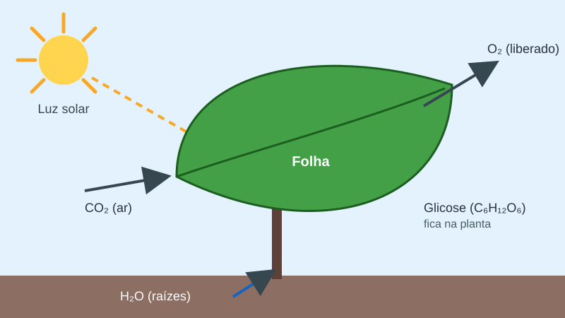
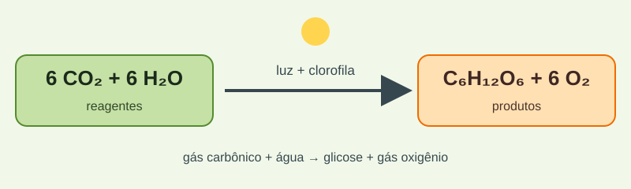
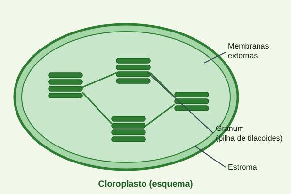
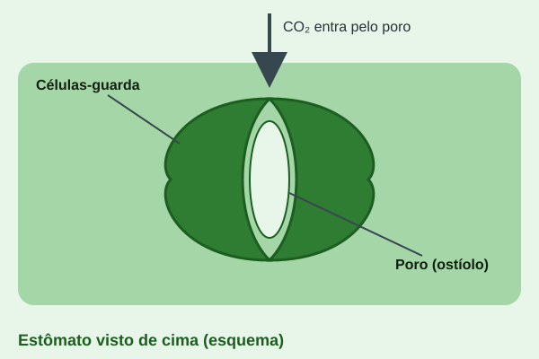
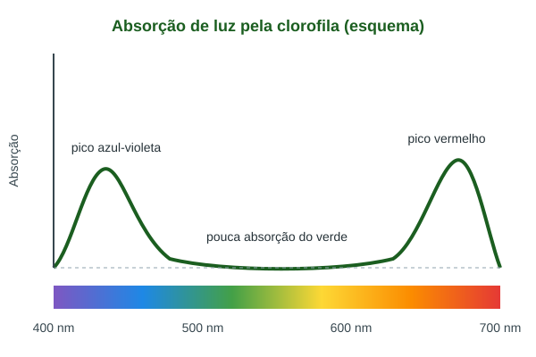
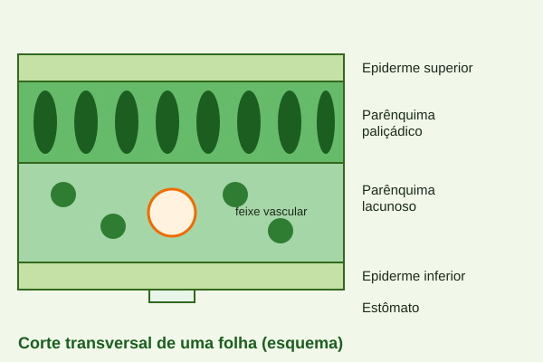

Fotossíntese: a luz que sustenta a vida
O que é a fotossíntese
A fotossíntese é o processo pelo qual plantas, algas e algumas bactérias (as cianobactérias) utilizam a energia da luz para produzir compostos orgânicos a partir de gás carbônico (CO₂) e água (H₂O). Nas plantas, ela ocorre principalmente nas folhas, dentro de organelas chamadas cloroplastos, que contêm o pigmento verde clorofila.
Os seres que realizam esse processo são chamados de autótrofos fotossintetizantes. Eles são os produtores da maioria das cadeias alimentares, pois transformam energia luminosa em energia química armazenada em moléculas como a glicose, que depois serve de alimento direto ou indireto para os demais seres vivos.

Onde ela acontece
O gás carbônico entra na folha por pequenas aberturas chamadas estômatos, enquanto a água absorvida pelas raízes sobe até as folhas pelo xilema. No interior da folha, as células do mesofilo são ricas em cloroplastos, e é nelas que a maior parte da fotossíntese acontece.
Dentro de cada cloroplasto existem membranas em forma de sacos achatados, os tilacoides, que se empilham formando estruturas chamadas granas. O líquido que preenche o espaço ao redor das granas é o estroma. Cada uma dessas regiões participa de uma etapa diferente do processo.
A equação geral
De forma resumida, a fotossíntese pode ser representada pela equação abaixo: seis moléculas de gás carbônico e seis de água, na presença de luz e clorofila, originam uma molécula de glicose e seis moléculas de gás oxigênio.

Um detalhe importante: o oxigênio liberado vem da água, e não do gás carbônico. Isso foi demonstrado em experimentos que utilizaram isótopos de oxigênio como marcadores.
As etapas da fotossíntese
Fase clara (etapa fotoquímica)
Ocorre nas membranas dos tilacoides e depende diretamente da luz. A clorofila absorve principalmente a luz vermelha e a azul-violeta, refletindo a verde, o que explica a cor das folhas. A energia absorvida quebra moléculas de água (fotólise da água), liberando gás oxigênio e produzindo as moléculas ATP e NADPH, que armazenam energia para a etapa seguinte.
Fase escura (ciclo de Calvin-Benson)
Ocorre no estroma do cloroplasto. Nela, o ATP e o NADPH produzidos na fase clara fornecem a energia e o poder redutor necessários para fixar o gás carbônico em moléculas orgânicas, formando açúcares como a glicose. A enzima rubisco tem papel central na fixação do CO₂. Essa fase é chamada de "escura" porque não utiliza a luz diretamente, mas ela depende dos produtos da fase clara.
Fatores que influenciam a fotossíntese
A velocidade da fotossíntese depende de condições do ambiente, como a intensidade da luz, a concentração de gás carbônico, a temperatura e a disponibilidade de água. Em geral, a taxa aumenta com a intensidade luminosa até certo ponto, chamado de ponto de saturação, a partir do qual outros fatores passam a limitar o processo.
Por que a fotossíntese é tão importante
A fotossíntese é a base da alimentação da maior parte dos seres vivos e é responsável pelo oxigênio presente na atmosfera, essencial para a respiração de muitos organismos. Ao retirar gás carbônico do ar, ela também participa do ciclo do carbono e influencia o equilíbrio do clima.
Além disso, os combustíveis fósseis, como o carvão e o petróleo, têm origem em matéria orgânica produzida por organismos fotossintetizantes há milhões de anos. Por isso, compreender a fotossíntese é fundamental para estudar alimentação, energia e meio ambiente.
Galeria de imagens
Esquemas que ajudam a visualizar as estruturas e conceitos ligados à fotossíntese.




Referências
- TAIZ, L.; ZEIGER, E.; MØLLER, I. M.; MURPHY, A. Fisiologia e Desenvolvimento Vegetal. 6. ed. Porto Alegre: Artmed, 2017.
- RAVEN, P. H.; EVERT, R. F.; EICHHORN, S. E. Biologia Vegetal. 8. ed. Rio de Janeiro: Guanabara Koogan, 2014.
- REECE, J. B. et al. Biologia de Campbell. 10. ed. Porto Alegre: Artmed, 2015.
- Todas as figuras e ilustrações deste site são esquemas originais, criados pelo autor da página através do uso de I.A. para fins educacionais.
- Normalização de estilos: modern-normalize (licença MIT). Fontes: Montserrat e Open Sans, via Google Fonts (licença SIL Open Font License).